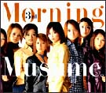
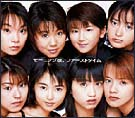
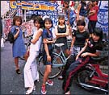
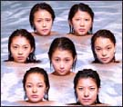
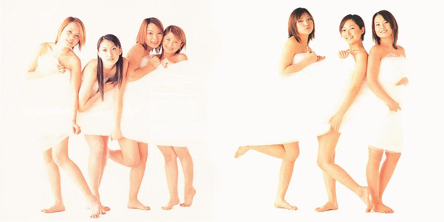

|
▶모닝구?
모닝구 무스매(morning musume)는 아침의 딸이란 뜻이다. 비록 일반인들에겐
생소한 이름이지만 일본 음악 팬이라면 결코 낯설지 않은 그룹이다. 모닝구의 코믹댄스와 재미있는 가사에는 한국의 가수들과는 또 다른 매력이 있다.
모닝구는 음악뿐만이 아니라 각종 CF와 캐릭터 상품으로서 상업성을 인정받고 있고, 최근 그들이 출연한 영화도 개봉되었다. 모닝구 멤버 전원이
주연인 영화로 마라톤에 관한 내용이다. |

| * 싱글 7집은
가라오케 순위와 오리콘 챠트를 휩쓸던 최대 히트작이다.. 그리구 아야의 표정연기는
아무도 따라올수
없는 최대 히트?
* 싱글 8집은 마리의
섹시빔의 열풍으로 몰고갔다. 인도풍의 노래와 춤이 돋보인다.
* 싱글 9집은 최근
5월17일날 나온 신작이며 역시 모닝구 다운. 면모를 볼수 있다.
이번에는 마리의
아챠가 가장 매력 포인트?
나오자 말자 동시
발매된 인기그룹 루나씨(luna sea) 하마사키 아유미(hamasaki ayumi)
제치고 당 당히
1위를 차지 하고있다.
▶ 모닝구의
멤버
모닝구의 초기 멤버는 모두 5명이었지만 멤버 증원과 탈퇴가 이어지면서 현재는 모두 11명이다. 멤버의 연령대는 최하 12세부터 최고 28살까지 골고루 분포해 있다. 또한 모닝구 멤버들로 이루어진 프로젝트 그룹 탄포포,
황청적, 푸치모니 등도 발표가 됐었다.
|
탄포포: 야구찌
마리, 카고 아이,
이시카와
리카, 이이다 카오리
푸치모니:
고토 마키, 야스다 케이,
요시자와
히토미
구멤버(탈퇴):
이치이 사야카(1차추가멤버)
후쿠데
아스카, 이시구로 아야
(초기멤버)
|
|
▶ 지금의 모닝구가 있기까지..
1978년 5월 12일, 훗까이도 삿포로 출신의 이시구로
아야는 고등학교 때 3년 정도 밴드 생활 중 보컬을 담당하면서 음악의 세계에 빠져 들었고, 주로 비주얼 계의 카피 밴드로 루나씨 등을
카피했었다. 그러던 중 현지의 복식 미술과의 단기 대학에 입학할 무렵, 아세안의 록-보컬리스트 오디션의 훗카이도 지구 대표로써 출전했었다. 그
당시 아베 나츠미와 이이다 카오리도 출전했었다. 모두 합숙을 거쳐 수많은 시련을 극복한 후, 최종 예선까지 살아남았지만 결국 록-보컬리스트로
뽑히지 못 했다. 그 뒤 서툴기만한 댄스 실력을 향상시킬려고 댄스 스튜디오를 찾아 열심히 연습하고, 나츠미와 댄스 유닛을 결성하려고 적극적으로
움직일 때 바로 기회가 다가왔다. 아얏뻬와 유짱, 아스카, 나치, 카오링의 5인조가 급거 결성되고5만장의 CD를 5일 안에 완매할 수 있으면
데뷔가 가능하다는 과제가 주어졌다. 아얏뻬는 훗까이도에서 착실히 프로모션 활동을 전개, 고등학교 졸업 앨범의 주소록에 실려 있는 전원에게 자필로
편지를 냈던 노력이 결실을 맺어 전국에서 순조로운 매상을 보여 결국 5만장을 다 판 뒤 1998년 1월 28일 모닝 코히로 모닝구 무스메
데뷔했다.
 |
데뷔 후 오리지널 컨피던스 6위로 등장하면서 순조로운 시작을 보인 뒤 같은 해
5월 27일, 마리뻬, 샤아링, 케짱의 신 멤버를 맞이하고 섬마 나이트 타운으로 대히트를 기록했다. first album의 릴리즈, 전국투어,
영화 이벤트 등 왕성한 활동을 하다 결국 다이떼 홀드 온 미. 로 오리콘 1등급으로 등장했다. 그 해 마지막으로 홍백가입전 출전과 레코드 대상
최우수 신인상을 수상했다. |
| 1998년 11월 18일, 카오링, 마리뻬, 아야뻬의 3인으로 결성된
'탄포포'가 데뷔했다. 첫번째 싱글 라스트 키스는 오리콘 2위로 등장했고, 99년 3월에는 2nd 'motto' , first album
'tanpopo1' 을 릴리즈 .'탄포포' 는 앨범으로부터의 싱글 컷. 10월에는 '세이나루카네가히비쿠요루' 을 릴리즈. 커플링으로는 같은 곡의
3인 솔로버젼을 입안했다. 그리고 발매 기념으로 탄포포의 단독 라이브 공연을 했다. 그 후 싱글곡은 물론, 앨범 곡들까지도 불러, 최후에는
눈물을 흘릴 정도의 멋진 라이브였다. 이후 탄포포는 마리뻬와 카오링의 2인조로 활동 예정 중이다. |

|
 |
99년에 접어들어 모닝구의 아스카가 봄 투어를 마지막으로 탈퇴를 표명했고,
메모리세이노히까리로 최후의 보컬을 맡았다. 4월 18일의 스테이지에서 사실상 은퇴를 했고, 그 후 7명이서 왕성한 활동을 하고, 마나쯔노고우센,
후루사토 등이 히트를 했다. 2번째 앨범의 릴리즈 후, 전국 투어 등을 마치고 9월 9일에 고토 마키를 새 멤버로 맞아 들이고 발매한
'라부머신'이 사회현상이 될 정도로 대히트를 기록했다. 100만장 판매고를 가볍게 돌파하고 현재까지도 순조로운 매상을 기록 중이다. 이것이
아얏뻬 최후의 싱글이 되었다. |
 1월 26일에는 8집 싱글이 발매됐는데 역시 각종 차트를 휩쓸며
1위를 석권했고, 프로젝트 그룹 푸치모니 역시 챠트를 휩쓰는 퀘거를 이룩했다. 4월 20일 사야카가 잠깐의 휴식과 솔로로서의 변신을 위해 탈퇴를
발표했으며. 5월 17일 싱글 9집(happy summer wedding)이 발표됐다.
록보컬리스트인 샤란큐 (シャランQ)의 TV 프로그램 오디션에 응모했던 5명(나카자와,
이이다, 이시구로, 아베, 후쿠다, -이시구로, 후쿠다는 탈퇴)는
마지막 선발까지 갔지만, 아쉽게도 그랑프리를 타지는 못했다.
그러나 희망이 있었다. 오디션 측은 이들에게 다시 모이게 요구를 했고, 오디션 측과 이 5명은 5일 이내에 5만장의 싱글을 팔지 못하면 해체하기로 약속을 맺는다. 그리고, 힘을 합쳐 만든 첫 싱글이 오리콘 챠트 의 6위에 오르는 대히트!! 일본 음악계에 파란을 일으킨다.
이후 자신들이 줄곧 해오고 싶던 가수 생활을 하게 된 5명은 프로듀서인 샤란큐의 보컬 '츠쿠'에 의해 3명(이치이, 야스다, 야구치 -- 이치이는 탈퇴)이 더 늘어난다. 그렇게 8명이 된 모닝구 무스메는 뭇 남성들의 인기를 독차지 하며 싱글을 낼 때마다 각종 차트를 석권하기 시작한다.
그러던 중 멤버 아스카가 중학교에 입학을 하게 되면서, 학업에 열중하겠다고 결심, 탈퇴를 선언한다. 그 뒤 입단한 멤버가 '코토'이다. 모닝구 무스메에 입단할 당시 그녀의 나이는 13살. 그렇지만 13세 같지 않은 성숙미와 매력을 발산하며 팀의 일원으로써 자리를 굳혀 간다. 그리고 이시카와, 츠지,카고, 요시자와가 차례로 입단, 지금의 10명 멤버 모닝구 무스메를 탄생시킨다.
1999년과 2000년은 모닝구 무스메의 음악이 온 일본 열도를 휩쓴 해였다. 청소년들은 이들의 어리숙하고 따라 부르기 쉬운 멜로디에 매료되어 앨범과 싱글을 수집하다시피 샀고, 멤버들의 포스터까지 도난 당하는 절정의 인기를 누리고 있다.
(발췌 : '일본으로 가는 길')
|